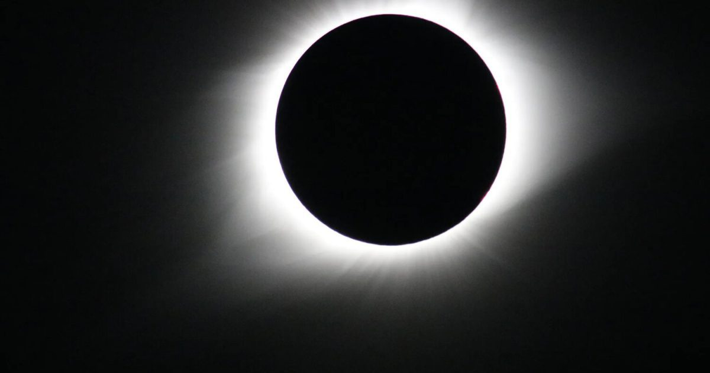

22 октября 2137 г. до н.э.: Затмение омрачает небо над древним Китаем
Самое раннее солнечное затмение, о котором у нас есть запись, появляется в древнем китайском тексте Шуцзин, который, как традиционно говорят, был составлен философом Конфуцием, в котором говорится: «В первый день последнего месяца осени Солнце и Луна не встретились гармонично в Фанге.» Какой заниженный способ описать продолжение «22 октября 2137 г.
до н.э.: затмение затемняет небо над древним Китаем» The post 22 октября 2137 г.
до н.э.: An eclipse da